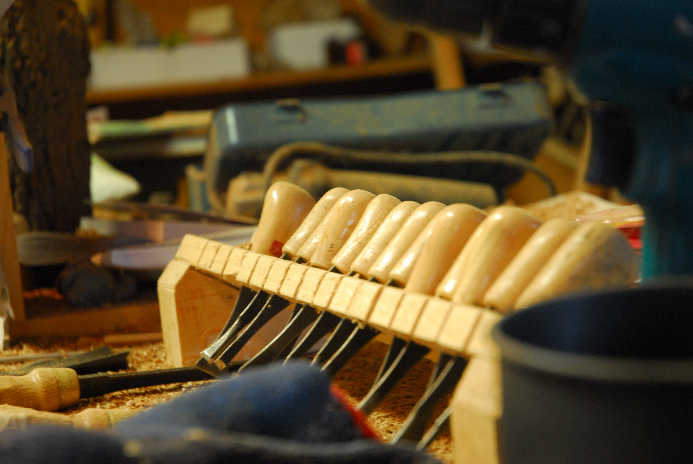

Copyright William Kats and Blackfoot Carvings. All Rights Reserved.

 Every wood carving is held first within the heart of a tree.
A tree grows up towards the rays of the sun, it’s roots drinking in the water deep beneath the soil. It may take a hundred years, it may take two hundred before this tree has grown to the bending curve of the sky and then taken a much different path, arced and fluid onto the forest floor. This is where the woodworker steps in, finding something within the tree that is held. A reflection of world, a ripple of light and water, ready to move closer to the surface, to be seen. Each strike of a mallet on the hardened chisel lets a little more light into the flowing curve of the butternut, the juniper. Each sanded edge displays the strength that is the fluid curve of water climbing back up towards the sun and, when the final piece is complete: the reflection shows through.
Unlike so many disciplines, Woodworking is a subtractive art, it requires the eye to see far ahead and build a path where none might yet exist… In this, it holds a unique and inflexible challenge. The challenge that comes with knowing that the artist cannot retreat. Each step forward must be a step taken deliberately and with a constant knowledge of what will be seen once the last curl of wood falls, the last roughness is sanded away, the last coat of varnish is applied and dried. This journey must be taken every time a unique piece is created.
Every piece on display, either in this website or sitting before you on a gallery shelf is unique and every piece has taken this extraordinary journey.
Copyright William Kats and Blackfoot Carvings. All Rights Reserved.